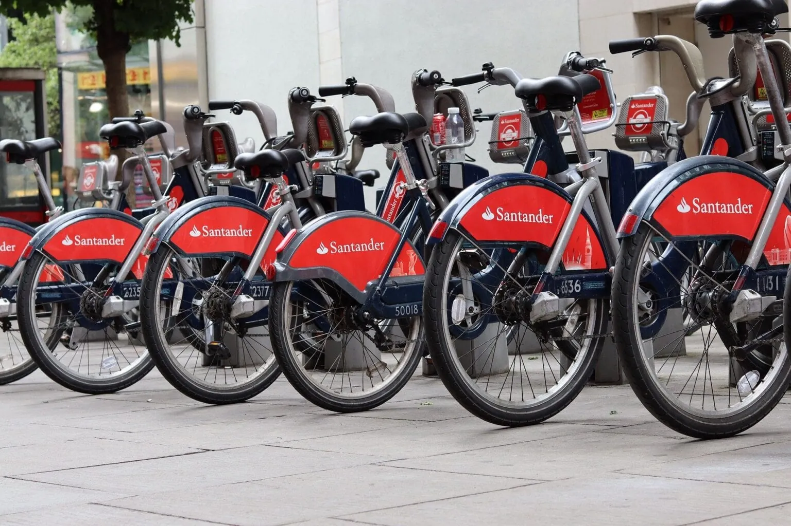
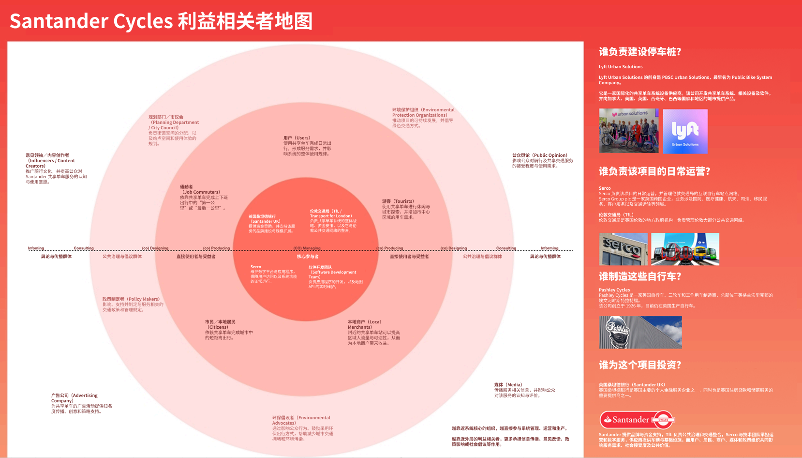
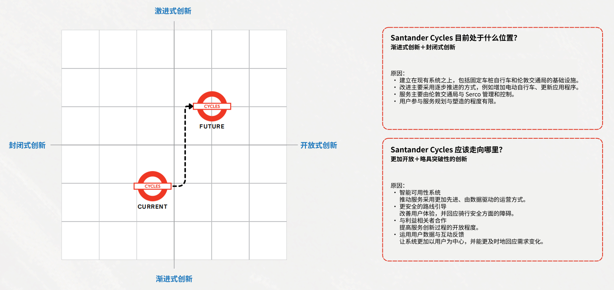

公共部门和品牌合作方共同影响服务范围、投入方式与公共价值目标。
CASE STUDY / 02← 返回作品
2026 / LONDON
伦敦共享单车
服务研究与策略
以伦敦 Santander Cycles 为对象，研究骑行者的使用体验与站点、车辆、运营之间的系统关系。

骑行体验的阻力，
往往不在骑行中.
借还车是否方便、站点车辆是否可用、不同区域的供需是否平衡，都会影响用户对一段旅程的判断。单看 App 或车辆本身，很难解释整个系统的体验问题。
USER EXPERIENCE
旅程是否可靠？
用户在出发前、途中和到达后，需要持续确认车辆、站点及归还选择是否可行。
OPERATIONS
资源如何流动？
站点供需不均与车辆调度限制，会直接成为前台体验的不确定性。
把前台行为和
后台限制连起来.
团队研究伦敦核心出行场景，建立多维度竞品分析框架，比较无桩共享单车与电单车在运营成本、调度效率和用户体验上的取舍。分析同时关注站点供需不平衡与重资产维护，而不把体验问题归咎于单一界面。
01 / JOURNEY
按出发、使用、归还三个阶段梳理关键任务与不确定性。
02 / SERVICE SYSTEM
把用户触点与车辆、站点、调度及维护的后台关系放在同一视角下。
03 / COMPETITION
对照其他微出行模式，比较便利性与运营复杂度之间的边界。
竞品比较关注的不是“哪种车更好”
我们把不同模式放进同一组服务问题中比较：用户在何处找到车辆、如何判断车辆与目的地是否可用、还车选择是否明确，以及当供需错位时由谁解决。这样可以把表面上的车辆差异，转化成服务可达性、运营响应和资源配置的差异。
01 / ACCESS
车辆在哪里？
站点式服务以固定网络换取明确的借还边界；无桩模式扩大了停放弹性，但用户需要理解可停区域，运营方也要处理车辆分散与秩序维护。
02 / AVAILABILITY
供需如何匹配？
用户的“有车可骑、到站可还”依赖车辆和空位同时可用。体验承诺因此与站点容量、时段需求和调度响应相连，而不是只由地图或提示文案决定。
03 / OPERATIONS
便利由谁承担成本？
更灵活的服务通常也带来车辆回收、维护和重新分布的运营工作。比较时需要同时看用户节省的时间与系统承担的调度复杂度。
04 / TRUST
不确定时如何补救？
车辆状态、停车规则或归还条件若不清楚，用户需要可理解的替代选择和问题处理路径。服务可信度来自信息、现场资源与后台响应的一致。
竞品框架用于比较服务机制和设计取舍；页面未给出各模式的实测成本或运营效率数据，因此不作量化优劣结论。
一次骑行背后，
是多方共同维持的系统.
利益相关者地图把资金支持、公共治理、日常运营、数字服务、基础设施和使用者放进同一张关系图中。它帮助团队看见：借还车体验不是某个单一触点的结果，而是不同组织能否连续交接信息、资源与责任。

原图作为研究过程证据保留。图中组织职责与供应关系来自项目阶段的资料整理，实际边界仍需以官方最新信息核验。
车辆、车桩、软件、调度和维护必须协同，才能把前台承诺转化为可用服务。
通勤者、游客、居民、商户及倡议组织会从不同角度影响需求、接受度与政策讨论。
从提供自行车，
到保障整段行程.
对用户旅程、价值主张与运营关系的梳理指向同一问题：价格合适、骑行方便，不等于用户能可靠地完成行程。出发时无车、到达时无桩，都会让一次便捷出行变成额外的等待与绕行。因此，方案关注的不只是“提供车辆”，而是减少旅程中的不确定性。
用户遇到的问题相关系统条件方案回应方向
出发无车不知道能否开始行程
需求与分布错位时段需求 · 车辆调度
改善车辆分布提高车辆获取确定性
到达满桩需要绕行寻找归还点
空位与流入不匹配站点容量 · 状态变化
增加归还弹性减少绕行与归还失败
途中不安难以判断路线是否适合
信息与道路条件路线提示 · 实际环境
保留为辅助方向提供路线与判断支持
分析关系与方案方向示意，并非已验证的因果结论。
两个相互补充的方案方向
团队提出智能可用性系统，将需求预测与车辆、车桩预约作为减少借还不确定性的方向；同时提出更安全的路线引导，支持途中选择。前者依赖实时数据与运营响应，后者提供决策信息，但不能替代道路安全条件的改善。
出发前确认车辆与目的地
骑行中获得路线与选择支持
到达时确认归还与替代站点
↑ 信息与服务响应 用户反馈与需求变化 ↓
后台协作需求预测车辆调度站点容量维护响应
信息让问题可见；后台资源与行动，决定服务能否兑现。

矩阵位置是团队基于现有研究形成的战略判断，用于比较创新方向，并非量化测量结果。
实施不是一次 App 更新，而是分阶段协作
短期从信息与反馈触点入手；中期讨论预测、预约和调度协同；长期再连接道路设施与政策支持。公共管理、运营、数字服务与骑行者分别掌握不同资源，需要围绕同一条行程协调，而非各自优化一个触点。
“真正的便利，是借得到、骑得顺，也还得了。”
从收集反馈，
走向共同定义问题.
项目也暴露出参与方式的边界：用户提供使用数据与意见，并不等于用户参与了服务决策。后续共创应让骑行者参与预约规则、替代路线与异常处理的讨论，检验运营效率的提升是否真正减少了用户的负担。
以上为团队研究形成的设计方向，尚未上线验证。预约公平性、预测准确性与调度可行性仍需结合真实运营数据和用户测试检验。
参考资料.
文章、网站与图片来源。以下条目根据团队资料页原文整理，保留原有作者、年份与访问日期。
- Architettura, A.Min. 08-I.C.E., Architettura, A.Min. 08-I.C.E. and Assegn, N. (2016) The Social Innovation Journey Toolbox. Available at: re.public.polimi.it (Accessed: 20 March 2026).
- Borras, K. (2025) TFL promises new app in wake of ‘failing’ Santander Cycles’ issues, Highways News. Available at: highways-news.com (Accessed: 19 March 2026).
- Britton, E. (2025) Not long ago cycling in London was wildly uncool. What changed?, The Standard. Available at: standard.co.uk (Accessed: 7 March 2026).
- Brompton (no date) Oyster Yachts. Available at: oysteryachts.com (Accessed: 19 March 2026).
- Brompton (no date) Hire a Brompton. Available at: gostratford.co.uk (Accessed: 19 March 2026).
- Brompton About Us (no date) Brompton Bike Hire. Available at: bromptonhire.com (Accessed: 19 March 2026).
- Brompton Bike Hire (no date) Brompton Bicycle UK. Available at: brompton.com (Accessed: 19 March 2026).
- Brompton Home (no date) Brompton Bike Hire. Available at: bromptonhire.com (Accessed: 19 March 2026).
- Davidson, T. (2025) ‘Moments like these reinforce how vital shared bikes have become’, Cycling Weekly. Available at: cyclingweekly.com (Accessed: 20 March 2026).
- Day, P. (2026) New Lime e-bikes to launch across UK cities, AirQualityNews. Available at: airqualitynews.com (Accessed: 19 March 2026).
- Ding, H., Lu, Y., Sze, N.N. and Li, H. (2022) ‘Effect of dockless bike-sharing scheme on demand’, Transportation Research Part A, 166, pp. 150–163.
- Elliot, M. (2025) Has London fallen out of love with e-biking?, Cycling Weekly. Available at: cyclingweekly.com (Accessed: 20 March 2026).
- Fishman, E. (2015) ‘Bikeshare: A review of recent literature’, Transport Reviews, 36(1), pp. 92–113. doi.org/10.1080/01441647.2015.1033036.
- H, M. (2025) Affordable Brompton Bike Hire in Ealing, ActionForEaling Climate Action Hub. Available at: actforealing.org (Accessed: 19 March 2026).
- Heydari, S., Konstantinoudis, G. and Behsoodi, A.W. (2021) ‘Effect of COVID-19 on bike-sharing demand’, PLOS ONE, 16(12), p. e0260969. doi.org/10.1371/journal.pone.0260969.
- How Lime works – help centre (no date) Lime. Available at: help.li.me (Accessed: 19 March 2026).
- Introducing the LimeBike & LimeGlider (no date) Lime. Available at: li.me (Accessed: 19 March 2026).
- Li, H., Zhang, Y., Ding, H. and Ren, G. (2019) ‘Effects of dockless bike-sharing systems’, Transportation Research Part A, 130, pp. 398–411.
- Lime micromobility | about (no date) Lime. Available at: li.me (Accessed: 19 March 2026).
- Limebike logo download (no date) Allvectorlogo. Available at: allvectorlogo.com (Accessed: 19 March 2026).
- London (2025) Santander Docking Stations. Available at: london.gov.uk (Accessed: 20 March 2026).
- London Cycling Campaign (2025) Cycling nearly doubles during strikes. Available at: lcc.org.uk (Accessed: 20 March 2026).
- LSE (2024) Promoting active travel in London – benefits and barriers. Available at: lse.ac.uk (Accessed: 20 March 2026).
- Noble, W. (2022) 500 Santander e-bikes will soon be on London’s streets, Londonist. Available at: londonist.com (Accessed: 19 March 2026).
- Our brand: About us (2026) Santander Bank. Available at: santander.co.uk (Accessed: 19 March 2026).
- Pucher, J., Dill, J. and Handy, S. (2010) ‘Infrastructure and policies to increase bicycling’, Preventive Medicine, 50, pp. S106–S125. doi.org/10.1016/j.ypmed.2009.07.028.
- Rogers, D. (2023) Download 8 strategy tools from ‘The DX Roadmap’. Available at: davidlrogersdigital.substack.com (Accessed: 20 March 2026).
- Santander Cycles (2024) Wikipedia. Available at: fr.wikipedia.org (Accessed: 19 March 2026).
- TFL (2022) 2021 saw highest ever use of Santander Cycles. Available at: tfl.gov.uk (Accessed: 20 March 2026).
- TFL (2025) New TfL data shows cycling journeys have risen by 43% since 2019. Available at: tfl.gov.uk (Accessed: 7 March 2026).
- TFL (2025) TfL joins forces with Serco to upgrade Santander Cycles. Available at: tfl.gov.uk (Accessed: 20 March 2026).
- Transport for London (2019) Cycling Trends Update. Available at: content.tfl.gov.uk (Accessed: 18 March 2026).
- Transport for London (no date) Santander Cycles. Available at: tfl.gov.uk (Accessed: 19 March 2026).
- Travel in London 2024 annual overview (no date) TFL. Available at: content.tfl.gov.uk (Accessed: 20 March 2026).
- Trapp, G.S. et al. (2011) ‘On your bike!’, International Journal of Behavioral Nutrition and Physical Activity, 8, pp. 1–10.
- Vizard, S. (2017) Santander adopts agile marketing approach, Marketing Week. Available at: marketingweek.com (Accessed: 19 March 2026).
- ‘Why do you Lime Bike?’ (2024) Campaign Brief. Available at: campaignbrief.com (Accessed: 19 March 2026).
- A short history of the cycle hire scheme (no date) London Transport Museum. Available at: ltmuseum.co.uk (Accessed: 20 March 2026).
NEXT CASE / 03RadioEd ↗